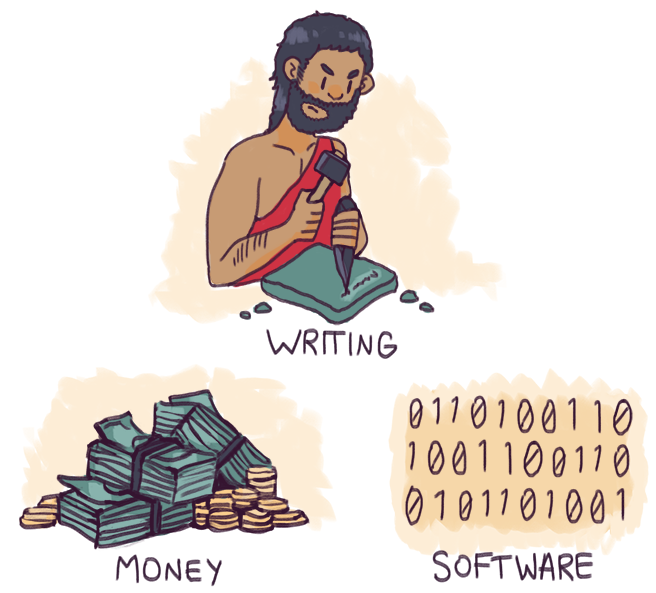

Um das Jahr 2000 herum geschah etwas von grosser Tragweite: Eine bedeutende neue und „softe“ Technologie wurde erwachsen. Nach der Erfindung der Schrift und des Geldes ist Software erst die dritte bedeutende Soft-Technologie der menschlichen Zivilisation. Jetzt, nach fünfzehn Jahren im Software-Zeitalter, wissen wir immer noch nicht so genau, was da eigentlich passiert ist. Marc Andreessens inzwischen allgemein bekannter Satz software is eating the worlddeutet an, dass da etwas Bedeutendes passiert ist. Dennoch beginnen wir gerade erst, die neue Welt zu verstehen, in der wir uns wiederfinden.

Schrift, Geld, SoftwareNur eine Handvoll allumfassend anwendbarer Technologien1 haben zu einer tief greifenden Umgestaltung der Welt geführt, die die Bezeichnung eating (verschlingend) verdient: Elektrizität, Dampfkraft, Präzisionsuhren, Schrift, Geld, Eisenverarbeitung und Landwirtschaft, um nur einige zu nennen,. Und nur zwei davon, nämlich die Schrift und das Geld, sind „softe“ Technologien. Sie sind offensichtlich nicht materiell, können aber doch eine Vielzahl physischer Formen annehmen. Software verhält sich zu Computern oder anderer IT-Hardware so wie Geld sich zu Münzen oder Kreditkarten und die Schrift sich zu Tontafeln oder Büchern verhält.Erst ungefähr seit dem Jahr 2000 hat Software diese ungebremste und von Hardware-Spezifikationen losgelöste Kraft entfaltet, die sie heute besitzt. Vorher, im ersten halben Jahrhundert der modernen Datenverarbeitung nach dem Zweiten Weltkrieg, war Hardware die treibende Kraft. Die von der Industrie geprägte Welt benutzte Software vorwiegend dazu, bestehende Aufgaben zu bewältigen – beispielsweise die Bestandserfassung und Gehaltsabrechnung. Sie wurde aber nicht von Software überwältigt. Die Technologie-Experten jener Zeit konzentrierten sich weitgehend darauf, die offensichtlichen und gegenwärtigen Probleme des Industriezeitalters zu lösen, statt die zukünftigen Möglichkeiten auszuloten, die in der Datenverarbeitung selbst verborgen sind.Irgendwann rund um die im Jahr 2000 platzende Dotcom-Blase veränderte sich jedoch der Charakter von Software und ihr Verhältnis zur Hardware. Der Übergang war durch ein beschleunigtes Wachstum der Software-Branche und den Höhepunkt der relativen Vorherrschaft der Hardware gekennzeichnet.2 Der Wechsel vollzog sich zuerst innerhalb der IT-Branche und dehnte sich dann auf die gesamte Wirtschaft aus.Aber die wirtschaftlichen Kennzahlen vermitteln nur eine vage Vorstellung3 von der daraus resultierenden tief greifenden gesellschaftlichen Umwälzung. Ein einfaches Beispiel: Heute kann ein 14-jähriger Teenager (der zu jung ist, um von den Arbeitsmarktstatistiken erfasst zu werden) das Programmieren erlernen, bedeutende Beiträge zu Open-Source-Projekten leisten und sich noch vor Erreichen der Volljährigkeit zu einem Programmierer entwickeln, der kaum einen Vergleich mit Profis zu scheuen braucht. Das ist das, was wir unter breaking smart verstehen:Ein Wirtschaftssubjekt versteht es, die frühe Beherrschung einer aufkommenden Technologie zu seinem Vorteil zu nutzen – in diesem Fall ist es ein Jugendlicher, der die Möglichkeiten nutzt, die die Software bietet. Auf diese Weise übt er einen überproportional grossen Einfluss auf die zukünftige Entwicklung aus.Nur ein kleiner Bruchteil dieser enorm wertvollen Leistungen würde bei den herkömmlichen Messverfahren für ökonomische Aktivität überhaupt sichtbar, nämlich nur die Kosten für einen Laptop und einen Internet-Anschluss. Betrachtet man lediglich die sichtbaren wirtschaftlichen Auswirkungen, könnten solche Aktivitäten sogar als negativer Wert in Erscheinung treten – als eine Art Technologie-getriebener Deflation. Aber die tatsächliche wirtschaftliche Bedeutung dieses unsichtbaren Vorgangs ist mindestens vergleichbar mit der Geschichte eines 18-Jährigen, der im Lauf von vier Jahren 100.000 Dollar an Studiengebühren ausgibt, um einen traditionellen College-Abschluss zu erhalten. In Extremfällen kann der Wert sogar so hoch sein wie der einer gesamten Branche. Die Musikindustrie ist dafür ein Beispiel: Ein von dem Teenager Shawn Fanning entwickeltes Produkt, nämlich Napster, hat eine Kaskade von Innovationen ausgelöst. Die grösste sichtbare Auswirkung war der atemberaubend schnelle Niedergang der grossen Platten-Labels. Zu den unsichtbaren Auswirkungen gehört eine regelrechte Explosion unabhängiger Musikproduktionen und ein schnelles Wachstum im Bereich der Live-Konzerte.4„Software is eating the world“ ist eine Geschichte, die von sichtbaren und unsichtbaren Faktoren handelt: Kleine, kaum messbare Effekte, die nicht gerade überwältigend erscheinen oder sogar negativ wirken – und grosse unsichtbare positive Effekte, die man leicht übersehen kann, wenn man nicht weiss, worauf man achten soll.5Inzwischen ist es so weit, dass die Bedeutung der unsichtbaren Entwicklungen von den meisten erkannt wird. Aber noch vor fünfzehn Jahren, als alles ins Rollen kam, waren selbst Veteranen der Technologieszene blind für den beginnenden Übergang von der Dominanz der Hardware zur Dominanz der Software.Das vielleicht subtilste Element hat mit dem Mooreschen Gesetz zu tun, jener berühmten Erkenntnis des Intel-Mitbegründers Gordon Moore aus dem Jahr 1965. Er hatte beobachtet, dass sich die Transistorendichte auf Mikroprozessoren alle 18 Monate verdoppelt. Ab dem Jahr 2000 stiessen die Halbleiterhersteller allmählich an die physischen Grenzen des Mooreschen Gesetzes. Aber die Chip-Entwickler und Hardware-Hersteller überlegten, wie sie das Mooresche Gesetz nutzen konnten, um die Herstellungskosten und den Stromverbrauch von Mikroprozessoren zu verringern – statt wie bisher die reine Rechenleistung zu erhöhen. Die Ergebnisse waren spektakulär. Preisgünstige mobile Geräte mit geringem Energieverbrauch, wie zum Beispiel Smartphones, fanden eine weite Verbreitung. Sie erweiterten unsere Vorstellung davon, was alles ein Computer sein kann. In Verbindung mit einer zuverlässigen und preiswerten Infrastruktur für das Cloud Computing und dem Breitband-Mobilfunk erweiterte sich das technologische Potenzial dramatisch. Die gesamte Datenverarbeitung wurde auf breiter Front wesentlich leichter zugänglich – für erheblich mehr Menschen in jedem Land der Welt. Denn die Kosten waren radikal gesunken und die Benutzerfreundlichkeit enorm gestiegen. Man musste kein Experte mehr sein, um irgendwelche Anwendungen nutzen zu können.Ein Ergebnis dieses höheren Potenzials war, dass die Technologen sich an eine kollektive Vision herantasteten, die allgemein als Internet der Dinge (Internet of Things) bezeichnet wird. Diese basiert darauf, dass Mikroprozessoren künftig so billig in winziger Grösse und mit geringem Energieverbrauch hergestellt werden können, dass sie einschliesslich Stromquelle, Sensoren und Auslösern in praktisch alles eingebaut werden können – die Palette reicht von Autos über Leuchten bis hin zu Kleidung und Medikamenten. Schätzungen zum wirtschaftlichen Potenzial des Internets der Dinge, also dem Bestücken praktisch aller physischen Gegenstände weltweit mit einem Chip samt Software, schwanken zwischen 2,7 und mehr als 14 Billionen US-Dollar. Das entspräche dem gesamten heutigen Bruttoinlandsprodukt der USA.6Um das Jahr 2010 war klar, dass unterstützt durch die fast grenzenlose Cloud-Computing-Power und die Fortschritte bei der Entwicklung leistungsfähiger Akkus das Programmieren nichts mehr war, was nur ein geschulter Fachmann am Desktop-Computer vollbringen konnte. Stattdessen konnte das auch ein Teenager bewerkstelligen – überall, auf praktisch jedem Gerät, für praktisch jeden Zweck.Dieser Prozess lässt sich am Beispiel der geteilten Nutzung von Autos besonders gut veranschaulichen.Vor noch wenigen Jahren schienen Dienste wie Uber und Lyft wie unbedeutende Ergänzungen des grossen Prozesses der Bereitstellung und Bezahlung von Taxifahrten. Nach und nach wurde aber deutlich, dass die Sharing-Plattformen zum einen die Aufgaben der Taxizentralen eliminierte und zum anderen die Anforderungen an die Fahrer senkte. Als durch GPS-Verfolgung und Bewertungsmechanismen einiges an Daten gesammelt war, wurde ausserdem deutlich, dass man Vertrauen und Sicherheit zunehmend besser durch Daten gewährleisten konnte als durch Markenversprechen und eine strenge Regulierung. Dies führte zu einer gewaltigen Ausweitung des Fahrerpotenzials und einer Senkung der Fahrtkosten. Denn genutzt werden Fahrzeuge, die ohnehin schon auf den Strassen unterwegs, aber nicht ausgelastet sind.Als das Konzept des Ridesharing zu einer Branche heranwuchs und sich in immer mehr Städten etablierte, kamen Folgeeffekte zum Tragen: Das einfache und bequeme Sharing ermöglicht immer mehr Städtern, einen auto-losen Lebensstil zu pflegen. Das zunehmende Angebot senkt die Mobilitätskosten und erhöht die Bewegglichkeit jener Menschen, die zuvor auf die umständlichen öffentlichen Verkehrsmittel angewiesen waren. Und als sich der Grundgedanke des auto-losen Lebensstils verbreitete, wurde den Stadtplanern klar, dass jahrhundertealte Trends wie die Suburbanisierung ihre Gültigkeit verlieren konnten. Denn der Zug der Mittelschuchten in die Vorstädte war zum Teil an den Besitz eines Autos gekoppelt.Die Zukunft des Ridesharing,, wie sie sich allmählich abzeichnet, ist sogar noch dramatischer. Die bessere Auslastung der Fahrzeuge führt zu einer sinkenden Nachfrage nach Autos und setzt bei den Verbrauchern finanzielle Ressourcen für andere Zwecke frei. Die Kosten eines individuellen Lebensstils sinken und Versicherungsmodelle müssen neu überdacht werden. Die Zukunft der Strassennetze muss ebenfalls im Hinblick auf eine umweltverträglichere und effiziente Nutzung von Fahrzeugen und Strassen diskutiert werden.Die durch Fahrgemeinschaftsmodelle entstandene Software-Infrastruktur verändert derweil auch die Marktbedingungen in anderen Branchen, etwa bei Zustelldiensten , die auf städtische Transportmittel und Logistiksysteme angewiesen sind. Und schliesslich ebnet die Ridesharing-Branche durch die Erprobung vieler technologischer Schlüsselkomponenten den Weg für den nächsten grossen Entwicklungssprung: die fahrerlosen Autos.Diese Entwicklungen sind Vorboten dafür, dass sich unser Verhältnis zu Autos grundlegend verändern wird.Für Traditionalisten, besonders in den USA, ist das Auto Sinnbild eines Lebensstils und das Smartphone stellt lediglich ein Accessoire dar. Im Gegensatz dazu ist bei den Early Adopters, die das Ridesharing-Konzept bereits tief in ihrem Lebensstil verankert haben, das Smartphone das Sinnbild ihres Lebensstils und das Auto ist lediglich ein Zubehör. Für Generationen von Amerikanern war der Besitz eines Autos gleichbedeutend mit Freiheit. Für die nächste Generation ist Freiheit damit verbunden, kein Auto zu besitzen.Auto: Jobs! American Way of Life! Vorstadtleben! FREIHEIT! – Handy: Nebensächlich. Ignorieren. Auto: Smartphone-Zubehör. – Handy: Unverzichtbares Werkzeug zur Organisation des eigenen Lebens. Neourbanität! Neuer American Way of Life! FREIHEIT!Diese dramatische Umkehrung unserer Beziehung zu zwei wichtigen Technologien – Autos und Smartphones – wird durch das beschleunigt, was anfangs als „noch eine weitere belanglose App“ abgetan wurde.Ähnliche Muster an Folgewirkungen zeigen sich in immer mehr Branchen. Zu den bekannten frühen Beispielen gehören das Verlagswesen, die Bildung, das Kabelfernsehen, der Luftverkehr, die Briefpost und die Hotellerie. Die Auswirkungen sind dabei nicht nur wirtschaftlicher Natur. Software verändert jeden Aspekt der weltweiten industriellen Sozialordnung.Ähnliches hat sich natürlich auch schon in früheren Zeiten ereignet. Die Erfindung des Geldes und der Schrift hat die Welt auf ähnlich tief greifende Weise verändert. Software ist aber flexibler und mächtiger als jede dieser beiden früheren Erfindungen.Die Schrift ist sehr flexibel. Wir können mit einem Finger im Sand oder mit einem Elektronenstrahl auf einem Stecknadelkopf schreiben. Das Geld ist sogar noch flexibler: Von Zigaretten im Gefängnis über Pfeffer und Salz in der Antike bis hin zu den modernen Fiatwährungen kann alles diesen Zweck erfüllen. Wie verhält es sich mit der Software? Diese kann zunehmend alle Aufgaben der Schrift und des Geldes übernehmen und darüber hinaus noch viel mehr. Software kann auch beide „verschlingen“ und der Schrift und dem Geld Möglichkeiten eröffnen, die ohne Software nicht denkbar wären.Die Grössenordnung der durch Software entfesselten Kräfte wurde systematisch unterschätzt. Zum Teil ist dies darauf zurückzuführen, dass „weltverschlingende“ Technologien nur selten in das Leben der Menschheit hereinplatzen. Man mag zwar den Eindruck haben, dass Software ständig Gegenstand der Medienberichterstattung ist. Aber die Folgewirkungen, die uns bereits bekannt sind, stellen nichts im Vergleich zu denen dar, die noch gar nicht sichtbar sind.Die Auswirkungen dieses weitverbreiteten Unterschätzens sind dramatisch. Die durch Software eröffneten Chancen nehmen zu und das Risiko, auf der falschen Seite des Wandlungsprozesses stecken zu bleiben, nimmt dramatisch zu. Wer die Auswirkungen der Software-Revolution korrekt eingeschätzt hat, zählt zu den Gewinnern. Wer sich verschätzt hat, findet sich auf der Verliererseite wieder.Die Gewinner gewinnen nicht nur einen kleinen oder vorübergehenden Vorsprung. Software-getriebene Siegeszüge im vergangenen Jahrzehnt waren in der Regel überwältigend und schufen vollendete Tatsachen, die nicht umkehrbar sind. Dies scheint für alle Ebenen zu gelten – von Einzelpersonen über Unternehmen bis hin zu ganzen Nationen. Selbst totalitäre Diktaturen scheinen der Transformation nicht endlos Widerstand leisten zu können.
„Software is eating the world.“ – Um diesen Prozess zu verstehen, müssen wir uns fragen, warum wir dessen Folgewirkungen systematisch unterschätzt haben und wie wir unsere Erwartungen an die Zukunft neu kalibrieren können.
[1] Wirtschaftswissenschaftler verwenden den Ausdruck Grundlagentechnologien für alles, was tief greifende Auswirkungen auf alle Branchen hat. Es herrscht jedoch kein Konsens darüber, welche Technologien dazugehören.[2] Grobe Schätzungen gehen davon aus, dass der direkte Beitrag der Hardware zum Bruttoinlandsprodukt (BIP) der USA zwischen 1977 und 2012 um ein Siebtel angewachsen ist (von 1,4 % im Jahr 1977 auf 1,6 % im Jahr 2012). Der direkte Beitrag der Software hingegen ist im selben Zeitraum um das Eineinhalbfache gestiegen (von 0,2 % im Jahr 1977 auf 0,5 % im Jahr 2012). Der Anteil der Hardware hat im Jahr 2000 seinen Höhepunkt erreicht (mit 2,2 % des BIP) und geht seitdem stetig zurück (Quelle: a16z-Recherche).[3] Siehe zum Beispiel Silicon Valley Doesn’t Believe Productivity is Down(Wall Street Journal, 16. Juli 2015) und GDP: A Brief but Affectionate History von Diane Coyle,besprochen in Arnold Kling, GDP and Measuring the Intangible, American Enterprise Institute, Februar 2014.[4]Why We Shouldn’t Worry About The (Alleged) Decline Of The Music Industry, Forbes, Januar 2012.[5] Die Idee von sichtbaren und unsichtbaren Folgewirkungen als übergreifendes Unterscheidungsmerkmal in der wirtschaftlichen Entwicklung kann auf einen einflussreichen Aufsatz von Frederic Bastiat aus dem Jahr 1850 zurückverfolgt werden. Dieser trägt den Titel Was man sieht und was man nicht sieht. [6] Drei unabhängige Schätzungen für das Jahr 2020 nennen konkrete Zahlen: Gartner schätzt den bis zum Jahr 2020 erwirtschafteten Mehrwert auf 1,9 Billionen US-Dollar. Cisco geht von einem Wert aus, der irgendwo zwischen 14 und 19 Billionen US-Dollar liegt. IDC beziffert ihn auf voraussichtlich rund 8,9 Billionen US-Dollar (Quelle: a16z-Recherchen).